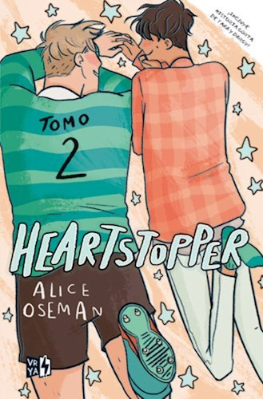

Resumen:Esta historia de amor entre dos chicos, uno de ellos
declaradamente homosexual y el otro en vías de autodescubrimiento, nos
recordaráque hay primeros amores frágiles como el cristal y memorables
como el diamante.
Puntuacion: 10/10

Autora:Alice Oseman
Resumen:Después de lanzarse a besar a Nick, Charlie cree que todo se ha
acabado, pero... ¿es así? Heartstopper responde a la manera de sentir de
los jóvenes reales, con una visión abierta, natural y sensible sobre el
amor y la identidad sexual, sin perder nunca la delicadeza y la emoción.